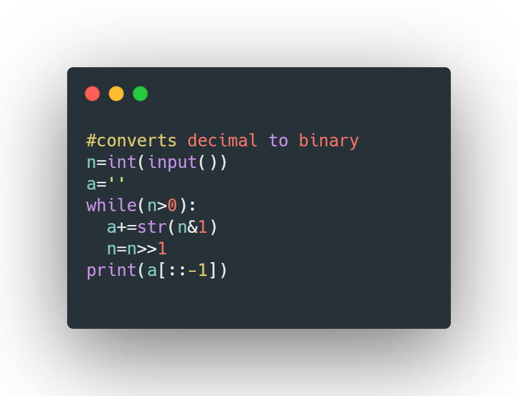
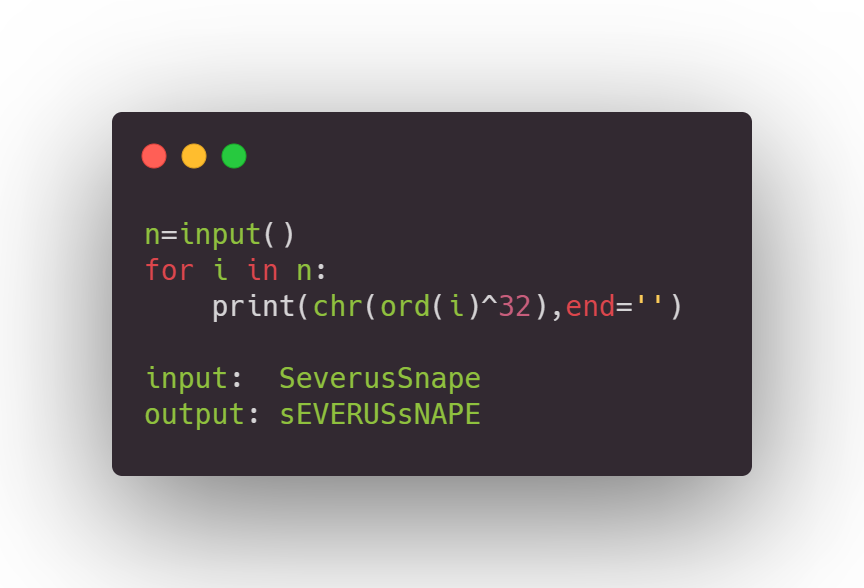

NOTES OF HALFBLOOD PRINCEEE:
codevita compiles processes only 10^8 instructions per second
we should go for time complexity less than O(10^8) ie O(log(n))
we know 10^3 ~2^10
for given constraints is n=10^8
it can be written as (10^3)^4
so (2^10)^4 so O(log(2^40)) (here log has base 2)
so n=40log2base2
time complexity=40.
--------------------------------------------------------------------------------------------------------------------------------------------------------------------------------------
practice spiral, wave pattterns
1)

Ans:
a=[1,2,3,4,4,5,5,6,1,2]
res=0
for i in a:- res^=i #XOR of duplicate elements will be eliminated
print(res)
here time complexity is O(n)
Time Complexities:

--------------------------------------------------------------------------------------------------------------------------------------------------------------------------------------
2)

select the sorting technique with less time complexity
--------------------------------------------------------------------------------------------------------------------------------------------------------------------------------------
3)by doing n&n-1 till n==0, we can count number of 1's in a number

--------------------------------------------------------------------------------------------------------------------------------------------------------------------------------------
formula for ones compliment of a number: 1's compliment of n = -(n+1) it is called hack
.png)
--------------------------------------------------------------------------------------------------------------------------------------------------------------------------------------
Retrieving kth bit of a number from its binary format : we use right shift operator here

--------------------------------------------------------------------------------------------------------------------------------------------------------------------------------------
Setting a bit as 1 in binary sequence:

Setting a bit as 0 in binary sequence:

--------------------------------------------------------------------------------------------------------------------------------------------------------------------------------------

--------------------------------------------------------------------------------------------------------------------------------------------------------------------------------------

--------------------------------------------------------------------------------------------------------------------------------------------------------------------------------------


--------------------------------------------------------------------------------------------------------------------------------------------------------------------------------------
5)using xor operator swapping two variables
x=x^y
y=xy
x=x^y
--------------------------------------------------------------------------------------------------------------------------------------------------------------------------------------


--------------------------------------------------------------------------------------------------------------------------------------------------------------------------------------
7) check nmber is even or odd:
num&1==1
else
--------------------------------------------------------------------------------------------------------------------------------------------------------------------------------------